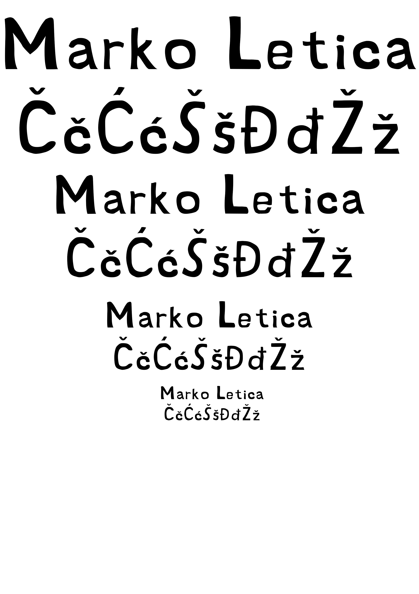

Ovo su moje vježbe sa digitalnih multimedija 1, idemo po redu:
Prve vježbe koje smo radili su bile vektorske vježbe uz pomoć programa Adobe Illustrator. Ispod možete vidjeti neke od vježbi te moj projektni zadatak iz ovog dijela predmeta.
Ovdje je zadatak bio napraviti vlastiti font. Ovo je moj!
Ovdje je zadatak bio igrati se sa interpolacijom i bojama!
Ovdje je zadatak bio traceati sliku i napraviti nekakvu svoju verziju, te je trebalo koristiti kopiranje i rotaciju.
Ovdje je zadatak bio napraviti relativno realistične refleksije i sjene.
Ovdje je zadatak bio kopirati sliku jelena u šumi te napraviti tu sliku uz pomoć vektora.
Nakon vektora, učili smo o piksel grafici te kako je manipulirati. Ispod možete vidjeti neke od vježbi te moj projektni zadatak iz ovog dijela predmeta.
Ovdje je zadatak bio napraviti touch-up slike uz pomoć Photoshopovih alata.
Ovdje je zadatak bio kolorirati sliku.
Ovdje je zadatak bio realistično ubacivati elemente u sliku.
Ovdje je zadatak bio kombinirati svo naučeno znanje o piksel grafici te napraviti sliku od danih elemenata.
Nakon piksel grafike, učili smo o HTML-u, izradi web stranica te video montaži. Ispod možete vidjeti cinemagraf te dva videozapisa koje smo obradili.
Evo link na moj zadnji projektni zadatak!
Ovo je cinemagraf, dio gifa je statičan.
U gornjem i donjem zadatku smo naučili kako izrezivati video te dodavati video i audio efekte.
Povratak na vrh!